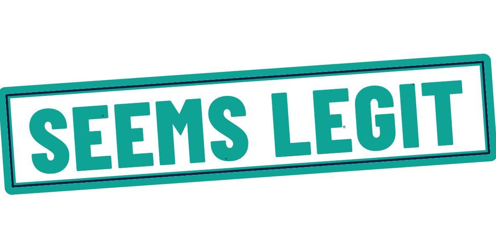
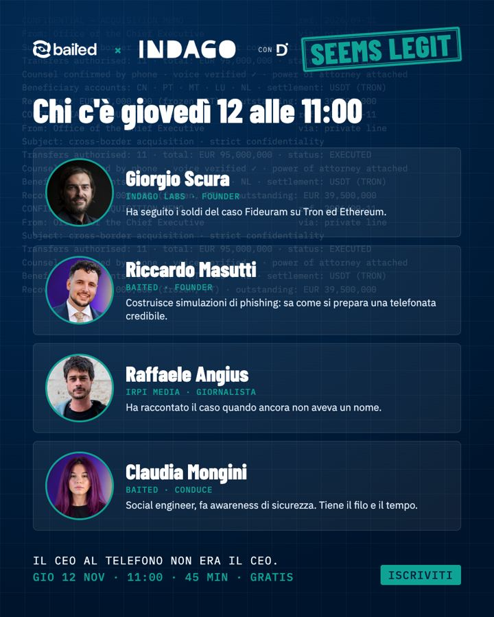
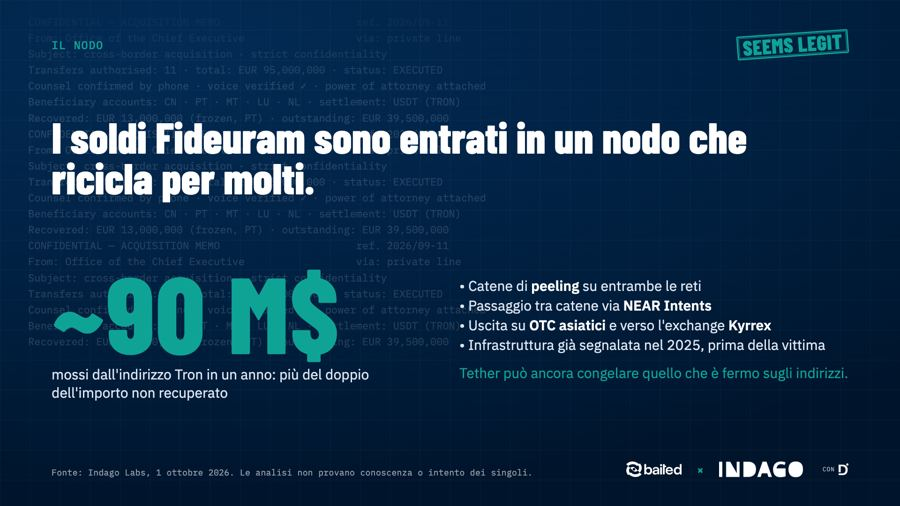
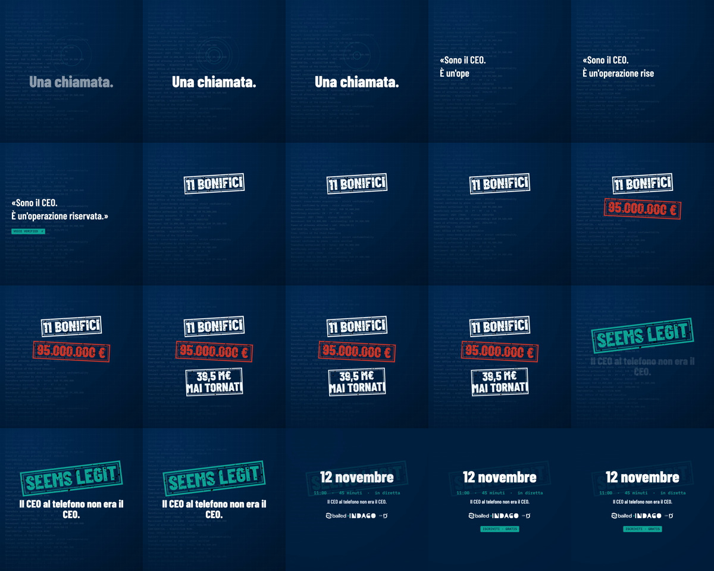
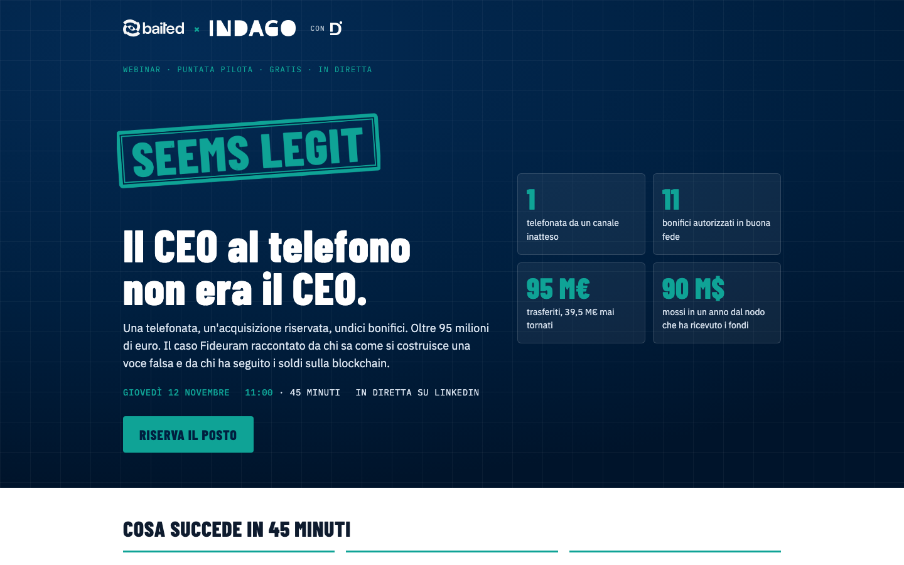

×

Il piano della puntata pilota
Giovedì 12 novembre, ore 11:00, 45 minuti. Il caso Fideuram raccontato in diretta.
22 ottobre 2026 · DixAgency
Cosa abbiamo deciso
Quando
Gio 12 novembre, 11:00
45 minuti, in diretta, gratis.
Tema
Il caso Fideuram
Falso CEO, voce sintetica, 11 bonifici, la pista USDT dell’inchiesta Indago.
Chi parla
Giorgio, Riccardo, Angius
Conduce Claudia. Un ospite a puntata, mai di più.
Obiettivo
Lead di manager interessati a un approfondimento tecnico: CISO, CTO, HR, chi firma i bonifici, giornalisti, grandi risparmiatori.
Messaggio
Due firewall anti-frode: Baited allena le persone, Indago conosce chi c’è dall’altra parte. Indago in testa, Decripto accanto.
Dalle email del 13, 21 e 22 ottobre
Da oggi alla diretta
| Quando | Cosa succede | Chi |
|---|---|---|
| Gio 22 – dom 26 ott | Si chiudono piattaforma, payoff, moderatore, ospite. Evento LinkedIn in bozza, stanza StreamYard. | Claudia, Dix |
| Mar 27 ott | Parte la promozione: landing online, evento pubblicato, post annuncio da Indago, Baited, Decripto e dai profili personali. | Tutti, alle 10:00 |
| Gio 30 ott | Teaser video 20 secondi. | Dix |
| Mar 4 – gio 6 nov | Post «chi parla» e carosello «il caso in 6 slide». Inviti personali ai contatti giusti. | Dix, tu, Riccardo, Claudia |
| Ven 7 o lun 9 nov | Prova tecnica di 20 minuti con tutti e quattro. | Tutti |
| Mar 10 – mer 11 nov | Promemoria sui canali ed email agli iscritti con il link. | Dix |
| Gio 12 nov, 11:00 | Diretta. Post «tra un’ora» alle 10:00, tutti in stanza alle 10:30. | Tutti |
| Ven 13 – mar 17 nov | Clip, carosello riassunto, registrazione sulla landing, email agli iscritti, nota stampa. | Dix, Claudia |
Date e canali nel calendario completo
I 45 minuti, minuto per minuto
| Min | Blocco | Chi | Cosa |
|---|---|---|---|
| 0–3 | Apertura | Claudia | Sigla, perché «Seems Legit», chi c’è. |
| 3–8 | La storia | Giorgio | Il caso raccontato, non analizzato. Fermarsi prima della scoperta. |
| 8–17 | Com’è stata costruita | Riccardo + Angius | Le leve del social engineering, la voce sintetica, cosa ha raccontato la cronaca. |
| 17–27 | Dove sono finiti i soldi | Giorgio | Dai conti europei a USDT, il nodo Tron da 90 milioni, le uscite. Cosa si può ancora congelare. |
| 27–35 | Cosa vuol dire per chi ascolta | Riccardo + Giorgio | Micro e macro. I due firewall, una frase a testa, niente pitch. |
| 35–43 | Domande | Moderatore | 3–4 domande dalla chat, due di riserva. |
| 43–45 | Chiusura | Claudia | Una frase a testa, landing, prossima puntata. |
Regole: le banche sono parti lese, nessun nome del sospettato, ogni cifra con la fonte sulla slide
L’identità: un timbro su un memo riservato

Il titolo resta «Seems Legit» per tutta la serie: un visto di controllo stampato di traverso. Cambia solo il payoff, uno per puntata. Colori e caratteri sono quelli di Indago, così i materiali stanno accanto ai caroselli già usciti. Baited entra con il suo logo.
Payoff proposto per il pilota
Il CEO al telefono non era il CEO.
Alternative: «95 milioni con una telefonata.» · «La voce era giusta. La persona no.» Se cambia, tutto si rigenera in pochi minuti.
Già pronto, da approvare

7 post in calendario
Annuncio, chi parla, promemoria, tra un’ora, grazie, storia, cover evento.

Carosello in 6 slide
Il caso dalla telefonata al nodo, per LinkedIn e Instagram.

6 slide di regia + cartelli
Scheda del caso, numeri, mappa dei soldi, nodo, firewall, ricerche. Sottopancia dei quattro.

Teaser 20 s e sigla 8 s
In verticale e quadrato, con il suono. Senza voce, per ora.
Tutto in una pagina di revisione con i video dentro, link nel messaggio
La landing è online e raccoglie le iscrizioni

Caso in tre numeri, relatori con le foto, modulo di iscrizione. Chi si iscrive riceve subito la conferma, il link il giorno prima e la registrazione dopo.
Le iscrizioni finiscono in un foglio condiviso. Dopo la diretta la pagina diventa quella della registrazione e delle puntate successive.
Indirizzo provvisorio
dixdecripto.github.io/seems-legit
Proposta: seemslegit.indagolabs.eu, serve un record DNS lato Indago.
Promozione: tutti i canali, stessa ora
| Canale | Chi | Uscite |
|---|---|---|
| LinkedIn Indago Labs | Dix | 27/10 annuncio · 30/10 teaser · 4/11 relatori · 6/11 carosello · 10/11 promemoria · 12/11 tra un’ora · 13/11 clip |
| LinkedIn Baited | Claudia | Stesso calendario, tono Baited. Ospita l’evento se Indago non può fare il Live. |
| Facebook e LinkedIn Decripto | Dix | 28/10 · 5/11 · 11/11, taglio cronaca: «la truffa dei 95 milioni spiegata in diretta». |
| Profili personali | Giorgio, Riccardo, Claudia | Rilancio di ogni post entro un’ora e inviti diretti ai contatti giusti: è il canale che porta più iscritti. |
| Newsletter e gruppi | Baited, Claudia | Newsletter il 28/10 e l’11/11; gruppi Telegram e LinkedIn nella settimana del 3/11. |
| Stampa di settore | Claudia | Cartella stampa il 29/10 e nota post evento il 13/11. |
Link all’iscrizione solo nel primo commento su LinkedIn. Testi pronti per ogni uscita.
Cosa serve, entro quando
Entro ven 24 ott · Giorgio e Claudia
Ok a payoff, grafiche e testi
Un’occhiata alla pagina dei materiali: cosa cambiare, cosa va.
Entro ven 24 ott · Indago
DNS per seemslegit.indagolabs.eu
Un record CNAME verso dixdecripto.github.io. Il resto lo fa DixAgency.
Entro mer 5 nov · Giorgio
Le cifre del caso, riverificate
Le slide usano il report del 1° ottobre e la stampa. Se qualcosa è cambiato, va corretto prima della diretta.
Dal 27 ott · tutti
Rilanci e inviti dai profili personali
Ogni post rilanciato entro un’ora, e 20–30 contatti a testa da invitare di persona.
Prova tecnica di 20 minuti venerdì 7 o lunedì 9 novembre: da fissare.
Da chiudere con Baited questa settimana
| Punto | Proposta | Chi decide |
|---|---|---|
| Piattaforma | LinkedIn Live con regia StreamYard, evento LinkedIn per gli iscritti, landing per le email. Da verificare quale pagina può fare il Live. | Giorgio e Claudia |
| Payoff | «Il CEO al telefono non era il CEO.» | Giorgio e Claudia |
| Ospite | Raffaele Angius, IRPI Media. Serve la conferma e una foto ufficiale. | Claudia |
| Moderatore chat | Una persona che legge le domande e le passa a Claudia dal minuto 35. | Claudia, o Dix dalla regia |
| Partnership | Chi firma (Decripto World o Indago Labs), cosa dà ciascuno, chi possiede titolo e dominio. | Giorgio |
| Dati degli iscritti | Contitolari Decripto World e Baited SA; un indirizzo comune per avvisi e privacy. | Giorgio e Claudia |
Appena chiusi questi sei punti, martedì 27 si parte.